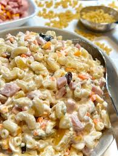

Marcaroni Salad

Description
This is a simple, easy to make, marcaoni salad that contains
nothing but healthy ingredients
ingredients
- Marcaroni
- Condiments
- Sugar and Vinegar
- Seasonings
- Vegetables (Celery, onion, bell pepper)
Steps
-
Cook marcaroni in salted water
- Mix together mayo, mustard, seasonings, vinegar, and sugar to taste
- Stir in the macaroni and remaining ingredients. CHill in the fridge
Home